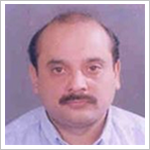

Promoters
Prof.Dr.S.ARULRHAJ, MD.,FRCP (G);MBA.
GROUP Chairman,
'ARULS' Group
www.drsarulrhaj.com
India.
A. PROFESSIONAL LEADERSHIP :
- University First Rank & Gold Medalist in MD (Internal medicine) 1977.
- DeanJlMACGP, New Delhi, 1995-1998
- National President, Indian Medical association, New Delhi 2002- 2003
- Association of Physicians of India, Mumbai, GB member from 2006
- Dr.BC Roy National Awardee, 2000
- President Commonwealth Medical Associations, UK 2007- 2012
- Chairman Commonwealth health Professional Alliance, UK since 2010
- Adjirnct-Professor'of Medicine, Dr. MGR Medical University, Chennai Chief Patron, IMACGP HQ, Chennai India 2010
- Academician, delivering Guest Lectures, Editing Textbooks, Journals& Publishing Scientific articles in journals etc.
- Public Health activist & works for Right to Health, Equitable Health care for Indians, Health care reaching to the unreached, Medical Education suiting today's needs etc.
B. HEALTH CARE :
- Sundaram Arulrhaj Hospital, Tuticorin - 100 bedded Municipality Medical Institution www.sahhospital.org
- Chairman, Tuticorin Diagnostic Centre, Hitech Medical Diagnosis Centre, Tuticorin.
- Chairman, Tuticorin. CT Scan & MRI scan Research Institute Ltd, Tuticorin & Tirunelveli.
- Health Tourism f- Promoting Health Tourism from Malasiya, Srilanka, Maldives etc.
- Life style centres - " Health Wealth", Tuticorin.
- Supporting to Promote Health Cities, Pharmahubs, Medical & Dental Colleges in African and other developing countries.
- Clinical research organi/ation - Promoting and taking part in clinical research organi/at ion's in India.
- Advisor, Pushpanjali Crossly Hospitals, New Delhi. 500 bedded Tertiary. care Hospital.
C. ENVIRONMENTAL PROJECTS :
- Chairman— AruPs Environment & Green ozone, India.
- Biotoilets and chemical toilets manufacturing & Marketing in Bombay.
- Director - Green ozone, U.K.BMW projects Nasik & Aurangabad, India.
- Biomedical waste. Disposal. Tamilnadu, Kerala, Nasik & Faridabad
- Biodegradable Bags, Mumbai.
- Hazardous waste treatment - Baroda in the pipeline.
- MSW to energy - Bangalore in the process.
- MPM INC, USA - technology company in USA under due diligence for acquisition.
D. PHARMA :
Grandix Pharmaceuticals Ltd.
Grandix Pharmaceuticals Ltd is a conglomerate promoted and managed by eminent professionals. Grandix started with an aim of serving mankind through medical fraternity.
Established in 1996, it serves Mankind by:
- Offering high quality medicines at affordable prices.
- Bringing out very innovative molecules which will suit the Indian patients.
- The share were liquidated in 2007.
Zenox life Sciences Ltd.
- www.zenbxlifesciences.com
- Established in 2010 with Doctors as shareholders
- Domestic Pharma Marketing Company. More than 70 products are being marketed.
Logix LifeScienceS Ltd.
- Accessory of Zenox LifeSciences meant for international marketing of Pharma Products.
Co Promoter
Name
: Jayesh Tanna
Date of Birth
: 19. 07. 62
Profession
: Director - Business Development
Nationality
: Indian
Key Qualifications : B.Com - Jai Hind University, Mumbai
Countries Worked : Singapore, Germany, USA. Canada. India, Austria,
Japan and United Kingdom.
Disciplines :
- Company management, marketing experience and development of business strategies in the industrial and environmental sectors for new developing markets.
- Business planning in waste management.
- Working knowledge on evaluation of waste to energy project viability and implementation.
- Experienced in overseas and domestic project leadership, management and administration.
- Waste water treatment
- Technology transfers from developed to developing industries.
- High standard verbal and written communication.